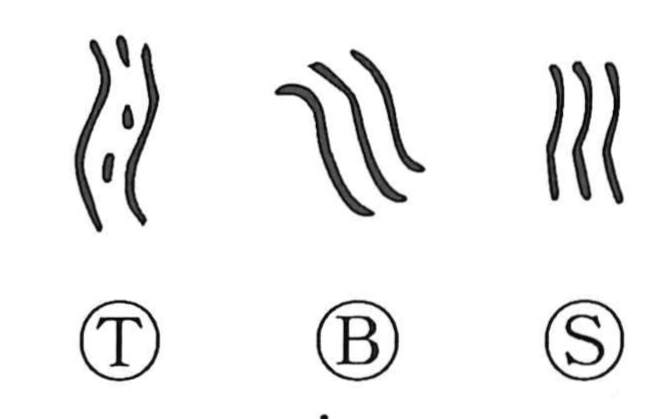

川

Kun: kawa | On: sen
river ・ stream
Explanation
A pictograph of flowing water: three parallel strokes sketch the forceful current of a river, in contrast to 水, which depicts a smaller flow. The graph appears inside characters such as 巡 (“to go around”) and 順 (“to follow”), reflecting the idea of moving with or along a current and linking sound and meaning in the on reading sen. The older on reading is reconstructed as thjyuen, and from this graph and its sound the kana for tsu—hiragana つ and katakana ツ—are traditionally thought to have developed.